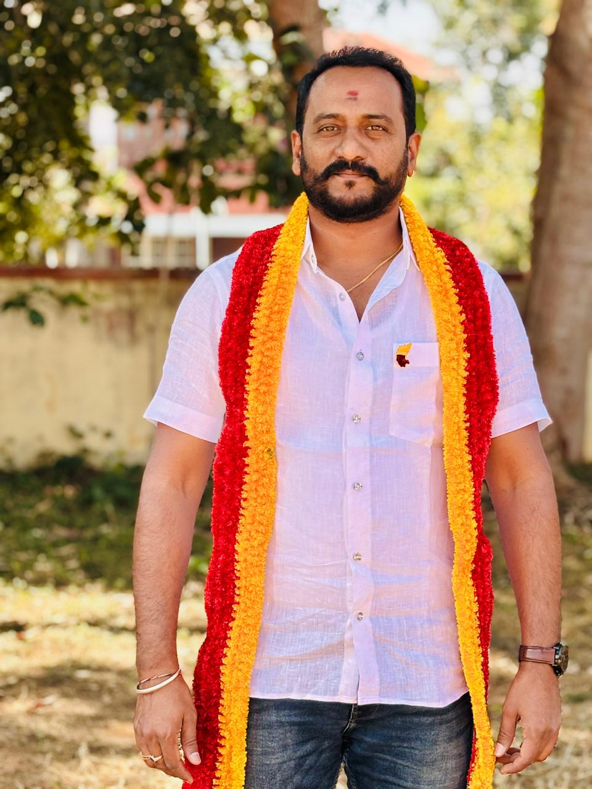
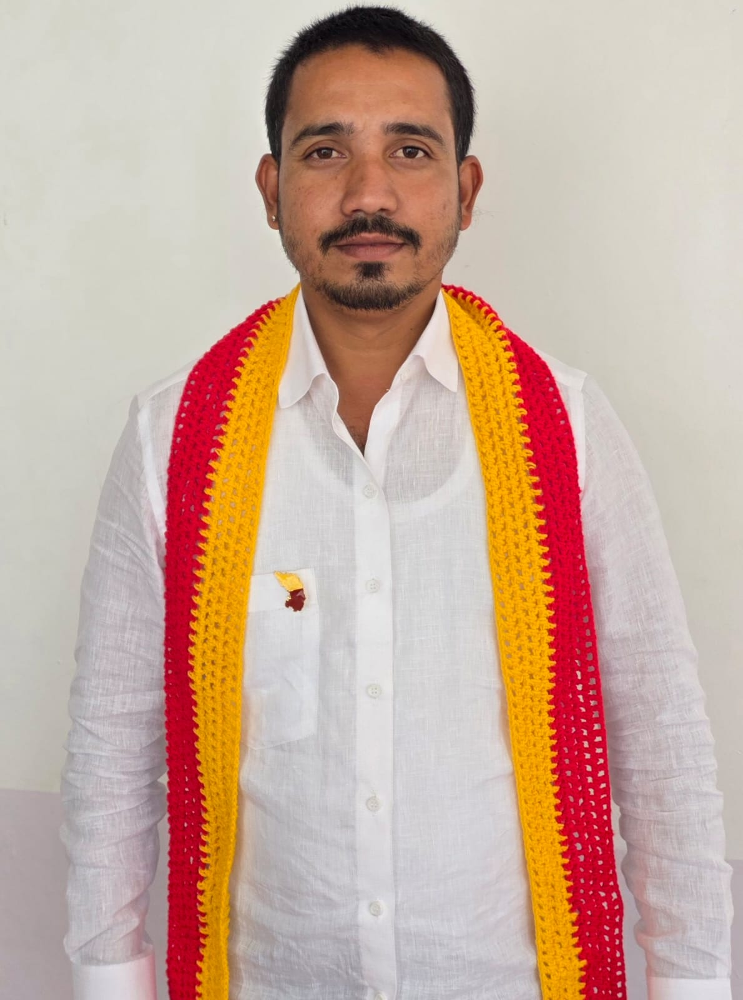
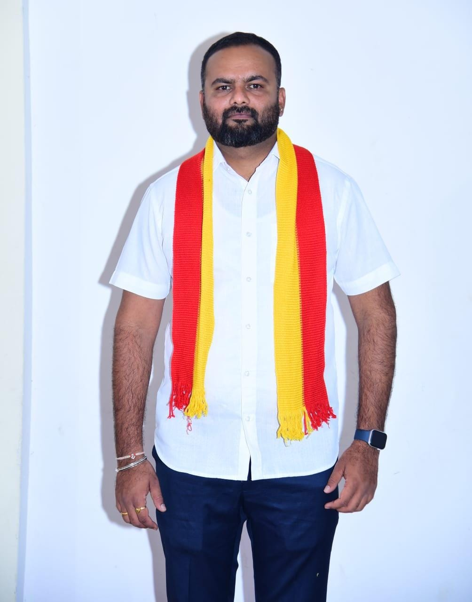

ಸಂತೋಷ್ ಕುಮಾರ್
ಮೈಸೂರು ಜಿಲ್ಲಾ ಅಧ್ಯಕ್ಷರು
ಮೈಸೂರು ಜಿಲ್ಲೆ
ನೋಂದಣಿ ಸಂಖ್ಯೆ ಡಿ.ಆರ್.ಸಿ.ಜೆ./ಎಸ್.ಓ.ಆರ್./206/2025-2026
ಸಿರಿಗನ್ನಡಂ ಗೆಲ್ಗೆ, ಸಿರಿಗನ್ನಡಂ ಬಾಳ್ಗೆ

ಚಾ.ಗು ನಾಗರಾಜ್
ಸಂಸ್ಥಾಪಕ ರಾಜ್ಯಾಧ್ಯಕ್ಷರು
ಮೈಸೂರು ಜಿಲ್ಲೆ
ನೋಂದಣಿ ಸಂಖ್ಯೆ ಡಿ.ಆರ್.ಸಿ.ಜೆ./ಎಸ್.ಓ.ಆರ್./206/2025-2026
ಕನ್ನಡ ಭಾಷೆಯ ಗೌರವವನ್ನು ಉಳಿಸಿ ಬೆಳೆಸುವುದು ಮತ್ತು ಸಮಾಜದಲ್ಲಿ ಕನ್ನಡದ ಮಹತ್ವವನ್ನು ಹೆಚ್ಚಿಸುವುದು.
ಕನ್ನಡ ಸಂಸ್ಕೃತಿ ಮತ್ತು ಪರಂಪರೆಯನ್ನು ಮುಂದಿನ ಪೀಳಿಗೆಗೆ ತಲುಪಿಸುವುದು ಹಾಗೂ ಜಾಗೃತಿ ಮೂಡಿಸುವುದು.
ಚಾ.ಗು ನಾಗರಾಜ್
ಕರ್ನಾಟಕ ಕನ್ನಡ ರಕ್ಷಣಾ ವೇದಿಕೆಯ ಸಂಸ್ಥಾಪಕ ಹಾಗೂ ರಾಜ್ಯಾಧ್ಯಕ್ಷರಾದ ಚಾ. ಗು. ನಾಗರಾಜ್ ಅವರು ಮೂಲತಃ ಗಡಿನಾಡು ಜಿಲ್ಲೆ ಚಾಮರಾಜನಗರ ಜಿಲ್ಲೆಯವರು. ಸಾಹಸ ಕರಾಟೆ ಕಲಾವಿದರಾಗಿ ಹಾಗೂ ಸಾಹಸ ನಿರ್ದೇಶಕರಾಗುವ ಆಸೆ-ಆಕಾಂಕ್ಷೆಗಳೊಂದಿಗೆ ಹಲವು ಚಿತ್ರಗಳಲ್ಲಿ ಸಾಹಸ ಕಲೆಗಳನ್ನು ಪ್ರದರ್ಶಿಸಿ ಕನ್ನಡ ಚಿತ್ರರಂಗಕ್ಕೆ ತಮ್ಮದೇ ಆದ ಕೊಡುಗೆಯನ್ನು ನೀಡಿದ್ದಾರೆ. ಕನ್ನಡಪರ ಹೋರಾಟಗಾರ ವಾಟಾಳ್ ನಾಗರಾಜ್ ರವರಿಂದ ಪ್ರೇರೇಪಿತರಾಗಿ ಕನ್ನಡ ಹೋರಾಟ ಚಳವಳಿಗಳಲ್ಲಿ ಸಕ್ರಿಯವಾಗಿ ಭಾಗವಹಿಸಿ, ಕನ್ನಡಿಗರ ಹಕ್ಕುಗಳು, ಕನ್ನಡ ಭಾಷೆ, ಕನ್ನಡ ಜಲ ಹಾಗೂ ಕನ್ನಡಿಗರಿಗೆ ಸಮಾನತೆ ದೊರಕುವ ನಿಟ್ಟಿನಲ್ಲಿ ನಿರಂತರ ಹೋರಾಟಗಳನ್ನು ನಡೆಸಿದ್ದಾರೆ. ತಮಿಳುನಾಡಿನ ನೀಲಗಿರಿ ಲೋಕಸಭಾ ಚುನಾವಣೆಯಲ್ಲಿ ಕನ್ನಡಿಗರ ಪರವಾಗಿ ಮೊದಲ ಕನ್ನಡಿಗ ಅಭ್ಯರ್ಥಿಯಾಗಿ ಸ್ಪರ್ಧಿಸಿ, ಕನ್ನಡಿಗರು ಕೆಚ್ಚೆದೆಯವರು, ಧೀರರು ಹಾಗೂ ನಾಡು-ನುಡಿಯ ರಕ್ಷಣೆಗಾಗಿ ತಮ್ಮ ಪ್ರಾಣವನ್ನೂ ಮುಡಿಪಾಗಿಡುವವರು ಎಂಬ ಸಂದೇಶವನ್ನು ಸಾರಿದ್ದಾರೆ. ಪ್ರಸ್ತುತ ವಿದ್ಯಮಾನಗಳನ್ನು ಗಮನದಲ್ಲಿಟ್ಟುಕೊಂಡು ಕನ್ನಡ ಭಾಷೆ, ನಾಡು, ನುಡಿ, ಜಲ ಹಾಗೂ ಗಡಿನಾಡು ಪ್ರದೇಶಗಳಲ್ಲಿ ಕನ್ನಡ ಮತ್ತು ಕನ್ನಡಿಗರು ರಾರಾಜಿಸುವಂತೆ ಮಾಡುವ ಉದ್ದೇಶದಿಂದ "ಕರ್ನಾಟಕ ಕನ್ನಡ ರಕ್ಷಣಾ ವೇದಿಕೆ"ಯನ್ನು ಸ್ಥಾಪಿಸಿ, ರಾಜ್ಯಾಧ್ಯಕ್ಷರಾಗಿ ಸಂಘಟನೆಯನ್ನು ಒಗ್ಗೂಡಿಸಿ ವಿಭಿನ್ನ ರೀತಿಯ ಹೋರಾಟಗಳನ್ನು ನಡೆಸುತ್ತಿದ್ದಾರೆ. ಕನ್ನಡ ಭಾಷೆ, ಸಂಸ್ಕೃತಿ, ಜಲ, ನಾಡು ಹಾಗೂ ನುಡಿಯ ಉಳಿವು ಮತ್ತು ಬೆಳವಣಿಗೆಗಾಗಿ ನಿರಂತರವಾಗಿ ಶ್ರಮಿಸುತ್ತಿದ್ದು, "ಕರ್ನಾಟಕದಲ್ಲಿ ಕನ್ನಡಿಗನೇ ಸಾರ್ವಭೌಮ" ಹಾಗೂ "ಕನ್ನಡಕ್ಕಾಗಿ ಕೈಯೆತ್ತು, ನಿನ್ನ ಕೈ ಕಲ್ಪವೃಕ್ಷವಾಗುವುದು" ಎಂಬ ಧ್ಯೇಯವಾಕ್ಯದೊಂದಿಗೆ ಕನ್ನಡ ಸೇವೆಯಲ್ಲಿ ತೊಡಗಿಸಿಕೊಂಡಿದ್ದಾರೆ. ✊ ಜೈ ಕರ್ನಾಟಕ ಮಾತೆ ಚಾ. ಗು. ನಾಗರಾಜ್ ಸಂಸ್ಥಾಪಕರು ಹಾಗೂ ರಾಜ್ಯಾಧ್ಯಕ್ಷರು ಕರ್ನಾಟಕ ಕನ್ನಡ ರಕ್ಷಣಾ ವೇದಿಕೆ
ಸಂತೋಷ್ ಕುಮಾರ್
ಕರ್ನಾಟಕ ಕನ್ನಡ ರಕ್ಷಣಾ ವೇದಿಕೆ ಮೈಸೂರು ಜಿಲ್ಲಾಧ್ಯಕ್ಷರು ಸಂತೋಷ್ ಕುಮಾರ್ ಅವರು 2000ನೇ ಇಸವಿಯಿಂದ ಬೆಂಗಳೂರಿನಲ್ಲಿ ಕರ್ನಾಟಕ ರಕ್ಷಣಾ ವೇದಿಕೆಯ ಪ್ರಧಾನ ಸಂಚಾಲಕರಾದ ಹರೀಶ್ ಕುಮಾರ್ ಅವರೊಂದಿಗೆ ಕೈಜೋಡಿಸಿ ಕನ್ನಡಪರ ಹೋರಾಟಗಾರರಾಗಿ ಕನ್ನಡ ಚಳುವಳಿಗಳಲ್ಲಿ ಸಕ್ರಿಯವಾಗಿ ಭಾಗವಹಿಸುತ್ತಿದ್ದಾರೆ. ಚಾಲಕ ವೃತ್ತಿಯ ಜೊತೆಗೆ ಉದ್ಯಮಿಯಾಗಿ ಹಾಗೂ ಸಾಮಾಜಿಕ ಹೋರಾಟಗಾರರಾಗಿ ಕನ್ನಡ ನಾಡು, ನೆಲ, ಜಲ ಮತ್ತು ಭಾಷೆಯ ರಕ್ಷಣೆಗಾಗಿ ನಿರಂತರವಾಗಿ ಶ್ರಮಿಸುತ್ತಿದ್ದಾರೆ. ಕರ್ನಾಟಕದಲ್ಲಿ ಕನ್ನಡಿಗರಿಗೆ ಉದ್ಯೋಗದಲ್ಲಿ ಮೊದಲ ಆದ್ಯತೆ ದೊರಕಬೇಕು ಎಂಬ ಉದ್ದೇಶದಿಂದ ಹಲವು ಹೋರಾಟಗಳನ್ನು ನಡೆಸಿದ್ದಾರೆ. ಪ್ರಸ್ತುತ ಕರ್ನಾಟಕ ಕನ್ನಡ ರಕ್ಷಣಾ ವೇದಿಕೆಯ ಮೈಸೂರು ಜಿಲ್ಲಾಧ್ಯಕ್ಷರಾಗಿ ಕಾರ್ಯನಿರ್ವಹಿಸುತ್ತಿದ್ದು, "ಕರ್ನಾಟಕದಲ್ಲಿ ಕನ್ನಡಿಗನೇ ಸಾರ್ವಭೌಮ" ಎಂಬ ಧ್ಯೇಯದೊಂದಿಗೆ ಕನ್ನಡಿಗರ ಹಕ್ಕುಗಳಿಗಾಗಿ ಹೋರಾಟ ನಡೆಸುತ್ತಿದ್ದಾರೆ. ಡಾ. ಬಿ.ಆರ್. ಅಂಬೇಡ್ಕರ್ ಅವರ ಸಂವಿಧಾನದ ಆಶಯಗಳು, ನಾಲ್ವಡಿ ಕೃಷ್ಣರಾಜ ಒಡೆಯರವರ ಕೊಡುಗೆಗಳು, ಕನ್ನಡ ಸಂಸ್ಕೃತಿ ಮತ್ತು ಕಲೆಗಳ ಸಂರಕ್ಷಣೆ, ಕನ್ನಡ ನಾಮಫಲಕಗಳ ಕಡ್ಡಾಯ ಅನುಷ್ಠಾನ, ಕನ್ನಡಿಗರಿಗೆ ಉದ್ಯೋಗಾವಕಾಶಗಳು ಹಾಗೂ ಭ್ರಷ್ಟ ಅಧಿಕಾರಿಗಳ ವಿರುದ್ಧ ನಿರಂತರ ಹೋರಾಟಗಳನ್ನು ಹಮ್ಮಿಕೊಳ್ಳುವ ಸಂಕಲ್ಪದೊಂದಿಗೆ ಕಾರ್ಯನಿರ್ವಹಿಸುತ್ತಿದ್ದಾರೆ. ✊ ಜೈ ಕರ್ನಾಟಕ ಮಾತೆ ಸಂತೋಷ್ ಕುಮಾರ್ ಮೈಸೂರು ಜಿಲ್ಲಾಧ್ಯಕ್ಷರು ಕರ್ನಾಟಕ ಕನ್ನಡ ರಕ್ಷಣಾ ವೇದಿಕೆ

ರಾಜ್ಯ ಪ್ರಧಾನ ಕಾರ್ಯದರ್ಶಿ
ಕರ್ನಾಟಕ ಕನ್ನಡ ರಕ್ಷಣಾ ವೇದಿಕೆ (ನೋ)

ಮೈಸೂರು ಜಿಲ್ಲೆ ಗೌರವಾಧ್ಯಕ್ಷರು
ಕರ್ನಾಟಕ ಕನ್ನಡ ರಕ್ಷಣಾ ವೇದಿಕೆ (ನೋ)

ಮೈಸೂರು ಜಿಲ್ಲಾ ಪ್ರಧಾನ ಕಾರ್ಯದರ್ಶಿ
ಕರ್ನಾಟಕ ಕನ್ನಡ ರಕ್ಷಣಾ ವೇದಿಕೆ (ನೋ)

ಮೈಸೂರು ಜಿಲ್ಲಾ ಖಜಾoಚಿ
ಕರ್ನಾಟಕ ಕನ್ನಡ ರಕ್ಷಣಾ ವೇದಿಕೆ (ನೋ)

ಮೈಸೂರು ಜಿಲ್ಲಾ ಉಪಾಧ್ಯಕ್ಷರು
ಕರ್ನಾಟಕ ಕನ್ನಡ ರಕ್ಷಣಾ ವೇದಿಕೆ (ನೋ)

ಮೈಸೂರು ಜಿಲ್ಲಾ ಸದಸ್ಯರು
ಕರ್ನಾಟಕ ಕನ್ನಡ ರಕ್ಷಣಾ ವೇದಿಕೆ (ನೋ)

ಮೈಸೂರು ಜಿಲ್ಲಾ ಸದಸ್ಯರು
ಕರ್ನಾಟಕ ಕನ್ನಡ ರಕ್ಷಣಾ ವೇದಿಕೆ (ನೋ)